GNUstep development tools : a basic tutorial
This tutorial will introduce you to creating a GNUstep application using ProjectCenter and Gorm.Creating an App
Launch ProjectCenter.app and select Project->New. In the "New Project..." dialog, select Application.Select the location of your application , give it a name (here we chose "Converter") and press OK.
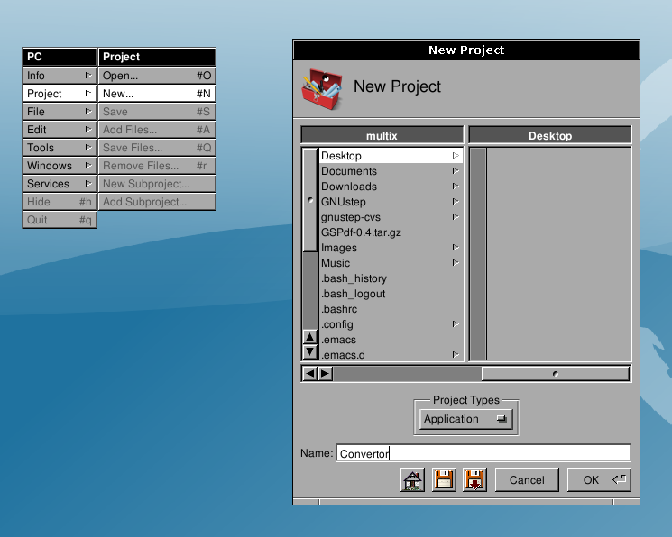
Editing the interface file
Select Interfaces in the main window browser. The project interface files will appear. Depending on the version of ProjectCenter you might find several versions of the interface (renaissance markup, for example). Since we are concentrating on the graphical editor Grom, you may safely remove the the other interfaces from the project with Project->Remove Files and using "Project and Disk".Select Convertor.gorm (or name_of_your_app.gorm) and click on it. That should launch Gorm automatically and open the file.
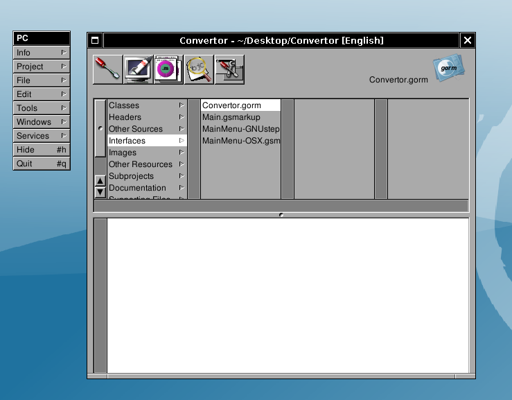
Gorm first contact
Here is what you'll get once you've double-clicked the .gorm file.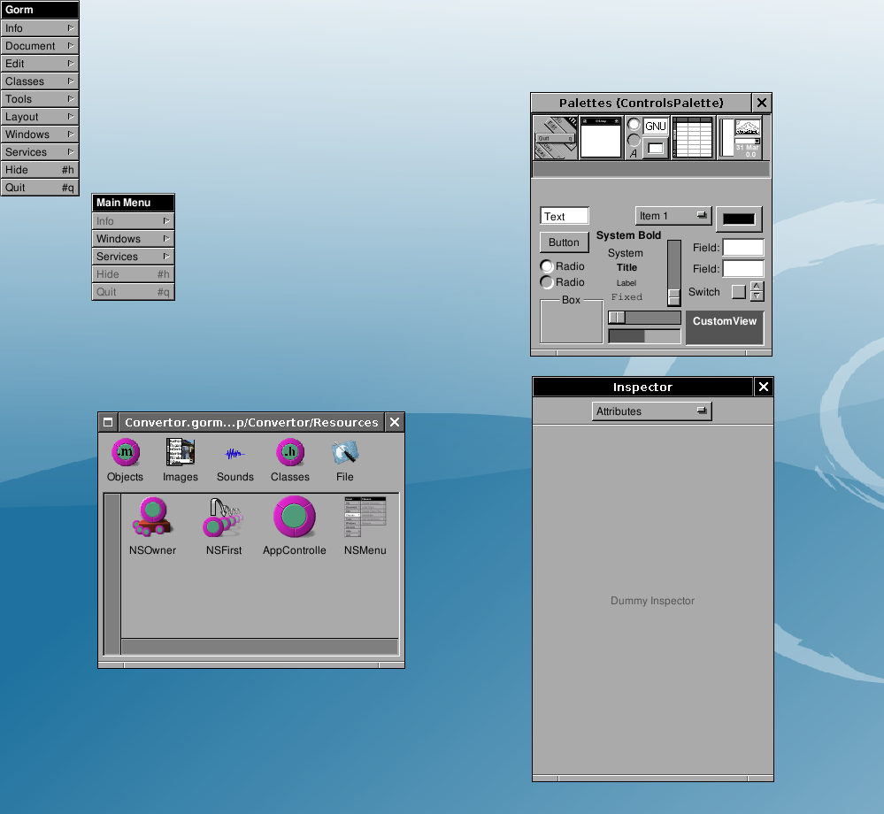
If the Palettes and Tools don't display automatically for you, show them using: Select Tools->Inspector... and Tools->Palettes...

Then you'll see the Palettes and Insepector windows.
The Palettes Window contains many palettes. Each of the palettes contains components which can be drag-and-dropped to the interface window.
From the Windows Palette, drag a "Window" into the Gorm Document. A Window will be instantiated and shown.
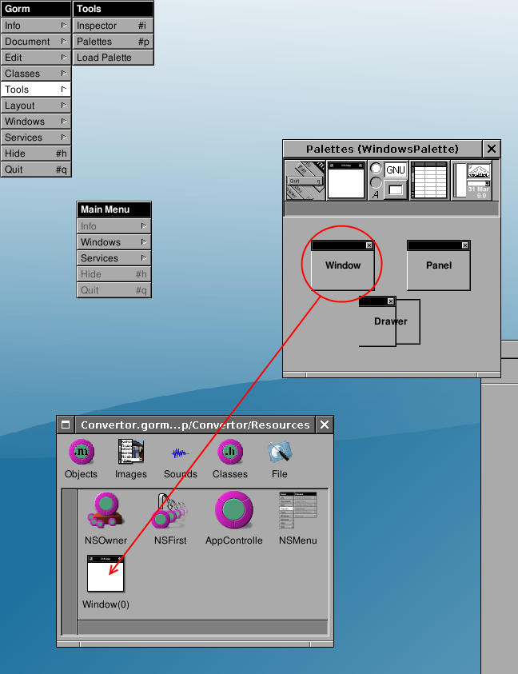
Rename the title of "My Window" to, for example, "Converter".
To do that, check in the Inspector, the Title property. Change it to the name you need (e.g. Converter) and hit enter. The title of the instantiated Window will automatically change.
You may also want to change the name of the Window Object. Although this does not have effect for the user interface, it helps when having many windows and objects instantiated to identify the correct one. Select it and choose Edit->SetName. Set it to something like MainWin: the name is for identification purposes only.
In the Attributes of the Window also tick the Visible at launch time Option. This will show the window automatically when the application is launched.
Creating the interface
Try to drag-and-drop some Text, Title and Button components to the
Converter window. Drag the items you need from the Palette (Controls Palette). Move things in
order to obtain an interface that looks close to the following one.
Resize the Controls and the window using the Handles.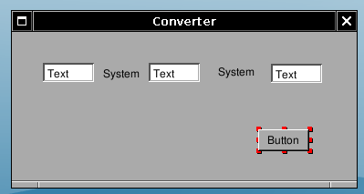
You can change the values of the control strings by directly double-clicking and doing in-line editing. Don't forget to press "Enter" or to click OK once you've finished editing the value.

Change the string values of the components to obtain the following.
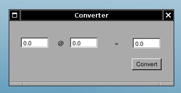
You can readjust the sizes to match the new labels, guidelines will appear to help you aligning the elements and you can also use the arrow keys to do precise movements.
Creating a subclass
Now select the "Classes" part of the main window. Select the NSObject
class and do Classes->Create Subclass..., in order to create a
subclass
of NSObject. It will be called "NewClass"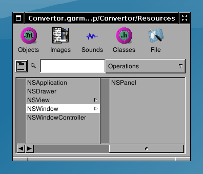

You should then see the following inspector window. If not select the new class (which should still be called NewClass) in the class browser of the main window, and do Classes->Edit Class...
Rename the class from NewClass to ConvertorManager (don't forget to press Enter, or your change will not affect anything).
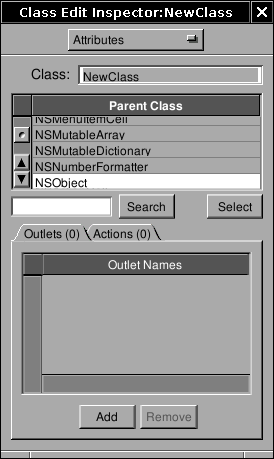
Adding outlets & actions
Now let's add some outlets. Outlets are basically instance variables of
the class that you will connect to interface's components at design
time. Outlets represent the components you want to work with and of
which you need to work in the code. Connecting them means interfacing
the code with the gorm interface. To edit Outlets you need select
ConvertorManager and get back into the Classes view, the Inspector will
change accordingly.So add three outlets : "amount", "rate", "result". Adding an outlet creates a new outlet called newOutlet: rename it by double-clicking and in-line editing.
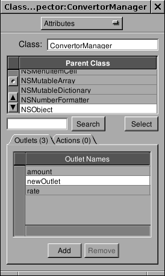
You will now create an action. An action is an object method which can be linked to interface's component at design time, so that a specific action on the component will get this method to be called. Actions specify interaction from the interface to the code, they are methods to which the interface will send messages. Actions carry as a parameter a sender which is the control generating the call.
Add one action named "convert:", please notice the ":" at the end.
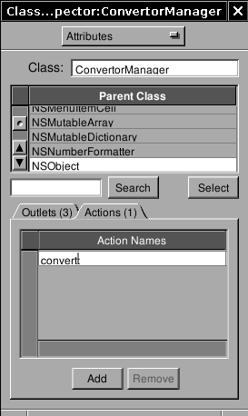
Instantiating the class
Now that we have defined the class's outlets and actions, we need to instantiate it. Do select Classes->Instantiate. Doing this tells GNUstep to create an instance of this class when the application is launched (to be more precise, when the nib/gorm file is loaded.) You should now see a new object (ConvertorManager) in the Objects part of Gorm's main panel.Connecting outlets and actions
We now need to connect the outlets of the instance of ConvertorManager we have created to their corresponding components. As you may have guessed, the amount outlet is to be connected to the first text field, rate to the second and result to the third.Done that, the ConvertorManager instance will be able to access those fields by using its instance variables. You will not have any code to write to have those connections up and working.
To connect the amount outlet to the first text field, you have to drag-and-drop while pressing the Control key from the ConvertorManager instance (the instance is in the Classes part of Gorm's main panel) to the first text field. Little S and T icons will appear showing who is the Source and who is the Target (those icons always appear in the bottom-left corner, if they are not then you are probably not selecting the component you want to select).
After drag-and-dropping, you have to select which outlet of the Source you want to connect to the target, do this by clicking the correct outlet in the Outlets column of the Inspector and by pressing the connect button. Do this for all three outlets amount, rate, result.
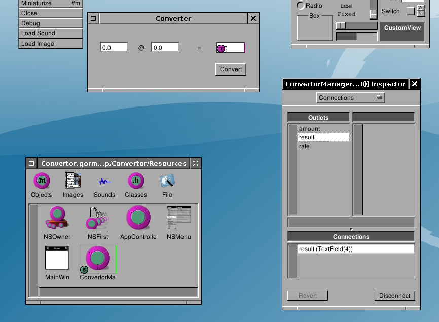
Connecting an action is a similar operation. Do a drag-and-drop with the control key pressed, from the Convert button to the instance of ConvertorManager. Then click target in the Outlets part of the inspector, all available actions of the target (here the ConvertorManager instance which has only one action) will appear in the Actions column. Click on the convert: action, and press the connect button. Now, every time the convert button is pressed it send a convert: message to the instance of ConvertorManager. The sender will be the Button.
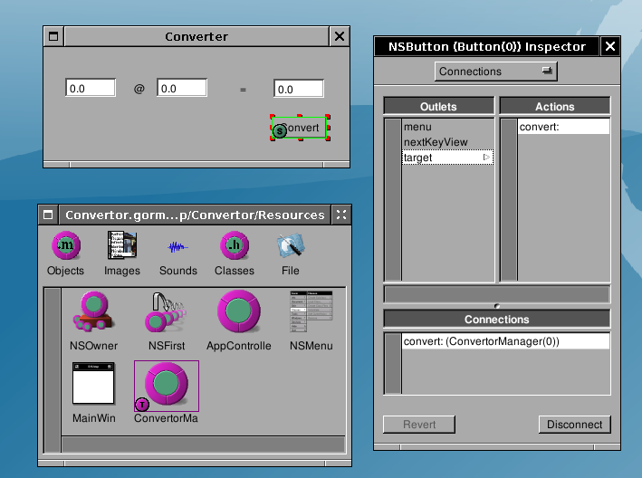
Creating the class's source and header files
Gorm.app can automatically create the skeleton of the class you've
designed: select the ConvertorManager class in the Classes panel of
the main window, and do Classes->Create Class's Files.Two successive Save Panels will pop up for the .m and the .h files. Gorm will propose as file names ConvertorManager.m and ConvertorManager.h, it is a good convetion to use the class name as a filename. Save those files into the Project directory.
You may also safely delete the "AppController" object instance if you have it in your Gorm file.
Once this is done, remember to save the interface if you haven't yet, and go back to ProjectCenter.app.
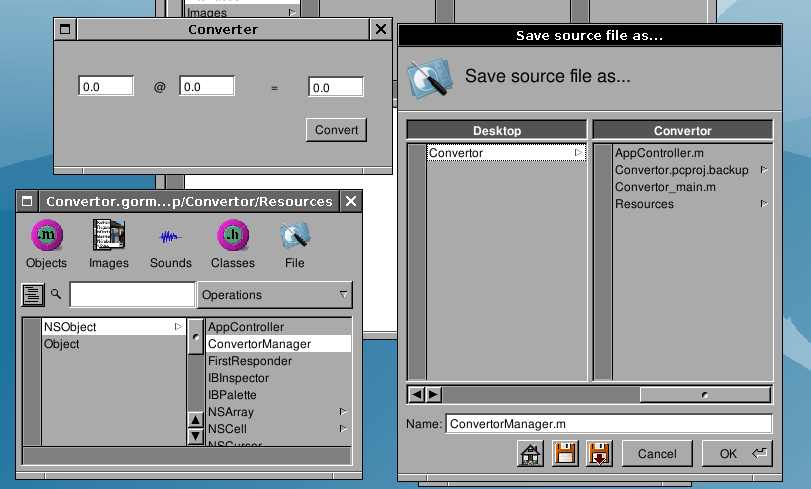
Adding the class's source and header files to the current project
You now need to add the class's files to the project. Double-click
"Classes" in the first column of the browser, choose the .m file to add
to the project (ConvertorManager.m); the corresponding header file will
be automatically added for you.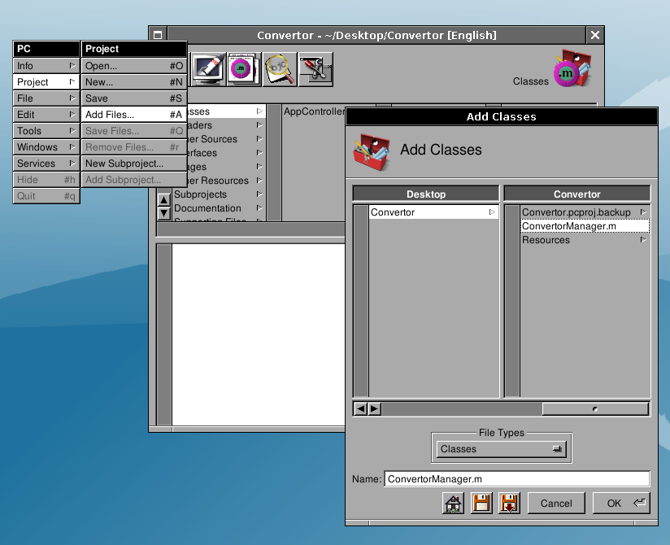
Writing the convert: method
Open the ConvertorManager.m file by slecting its name within ProjectCenter.app browser. YOu can display the file in the embedded view or, alternatively, double-clicking will open it in a separate editor.You should see the following :
/* All Rights reserved */Add the following inside the convert: method:
#import <AppKit/AppKit.h>
#import "ConvertorManager.h"
@implementation ConvertorManager
- (void) convert: (id) sender
{
/* insert your code here */
}
@end
[result setFloatValue: [rate floatValue] * [amount floatValue]];or if you want to have a nicer dispaying :
[result setStringValue: [NSString stringWithFormat: @"%1.2f",Save the file.
[amount floatValue] * [rate floatValue]]];

You may safely remove the AppController class from your project, we are not using it.
Compiling and running
Click to dispay the building panel.
Then click to build the project. If
there is no
errors (and hopefully there is none), you can run the application. To
do it, click to display the run panel. Then
click the first button (at this time it has still no icon), this should
launch the application :
to dispay the building panel.
Then click to build the project. If
there is no
errors (and hopefully there is none), you can run the application. To
do it, click to display the run panel. Then
click the first button (at this time it has still no icon), this should
launch the application :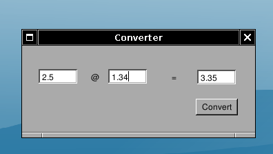
Convertor.app in action, converting between Euro and US Dollar.
Congratulations, you have made your first GNUstep application.
Initial writing 07-07-2001
Modified 02-Feb-2005 by Alex Perez
Updated 13-Nov-2010 Riccardo Mottola
Copyright © 2001, 2005 Pierre-Yves Rivaille